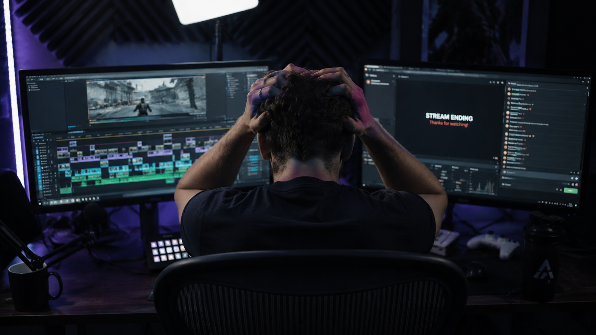

Generic AI Tools
- Sees HUD elements
- Hears voices
- Detects motion
- Finds faces
- Identifies speakers
Experimental Mode · Private Beta
Spend less time reviewing. More time creating. Viewer-first, retention-driven video production.
GAME INTELLIGENCE
Generic AI sees pixels. ShadyGG learns how each game works
—so it understands why moments
matter, not just what happened.
Every processed stream helps improve the system's understanding of the games. New observations evolve Game Profiles and make future story detection smarter.
Every new game makes the platform smarter for all creators.
PAIN AND RELIEF
We handle the heavy lifting. You focus on the creative work.

THE SHADY MAGIC
See how ShadyGG transforms hours of gameplay into a structured editing draft—one step at a time.

Original gameplay waiting to become a story.
Gameplay, audio, speakers and timeline understood.
Multiple story directions discovered automatically.
One complete narrative selected and structured.
Scene order, pacing and editing decisions prepared.
<precut_sequence> <clipitem
id="001"> <timeline>VOD.xml</precut_sequence>
XML timeline ready for creative editing.
PRIVATE BETA #001
See how a 2-hour Arena Breakout stream became a structured editing draft in under 20 minutes.
Anyone can apply through the beta form. I manually review every submission and select projects that best help improve ShadyGG. During the private beta, the focus is on testing different games, creator styles, and real-world workflows—not on first come, first served.
Premiere Pro is currently supported through XML export. Support for additional editors is planned.
No. ShadyGG prepares the story, structure and editing plan. The creative editing remains yours.
Most streams are processed in around 15–20 minutes, depending on length and complexity.
The first game-specific profile was built for ARC Raiders, but ShadyGG also works without game-specific knowledge. As development continues, I'll keep adding dedicated game profiles to improve accuracy and storytelling for more titles.
Yes. ShadyGG creates a structured editing draft that you can turn into content for YouTube, TikTok, Shorts, Reels, or any other platform. Your final edit is yours to publish wherever you want.
No. ShadyGG removes the repetitive preparation work. Your editing style, pacing and creative decisions remain your own.
BUILDING IN PUBLIC
I'm building ShadyGG in public. The project started on July 21, 2026 and is currently in active development. The goal is simple: help creators spend less time preparing and more time creating.
COMMUNITY
Want to follow development, give feedback or join the private beta?
Join DiscordBe part of the community building ShadyGG.SUPPORT THE PROJECT
If you enjoy the project and want to help accelerate development, you can support it directly.
Support via PayPalFOLLOW ME